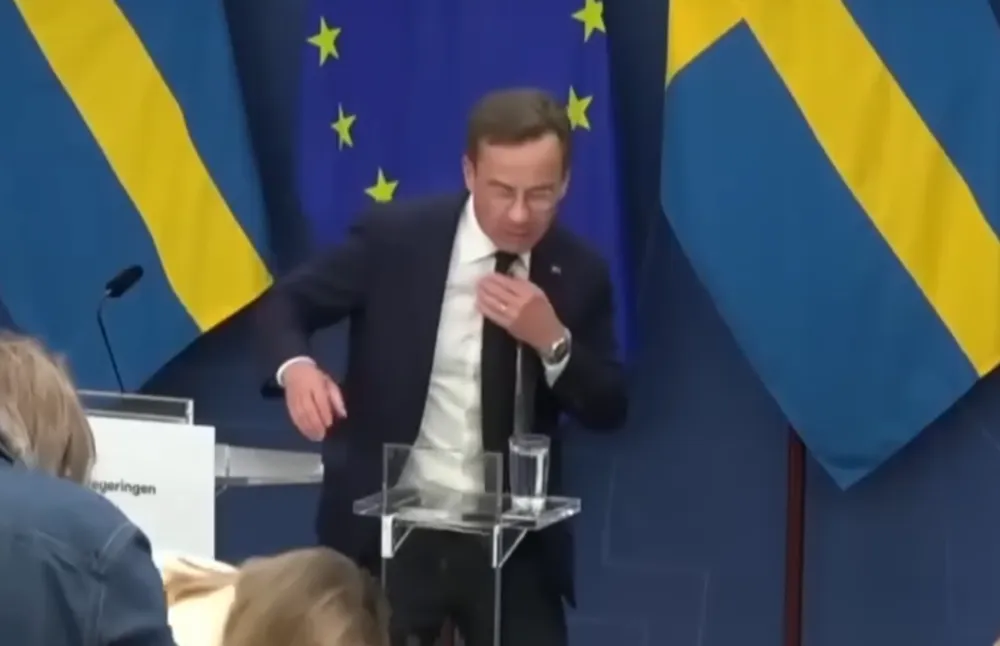

Politik

Kristersson: "slipsen ramlade nästan av"
Under en synnerligen tråkig pressträff under tisdagen förra veckan svimmade hälsoministern Elisabet Lann (KD). Pressträffen livestreamades och statsministerns reaktion har fått stor uppmärksamhet. I klippet ser man tydligt hur först hälsoministern faller framåt följt av några danssteg och frenetiskt viftande från statsministern, följt av att han sedan rättar till slipsen och allvarligt tittar på när Ebba Busch Thor (KD) och åskådare hjälper Lann.
I en intervju efter pressträffen berättar Kristersson hur han nästan "tappade slipsen" under de intensiva sekunderna. "Det är något vi här i riksdagen ser väldigt allvarligt på", berättar Kristersson. "Som tur är knöt mamma slipsen extra hårt idag", avslutar han. Knut Matsson, politisk kommentator, menar att konsekvenserna för nationen hade varit digra ifall slipsen mot förmodan trillat av. "Mycket av Sveriges anseende hänger på statsministerns klädsel. Se till exempel hur Trump behandlar Zelenskyj". I framtiden hoppas han på färre incidenter där statsministerns slips riskerar att ramla av.